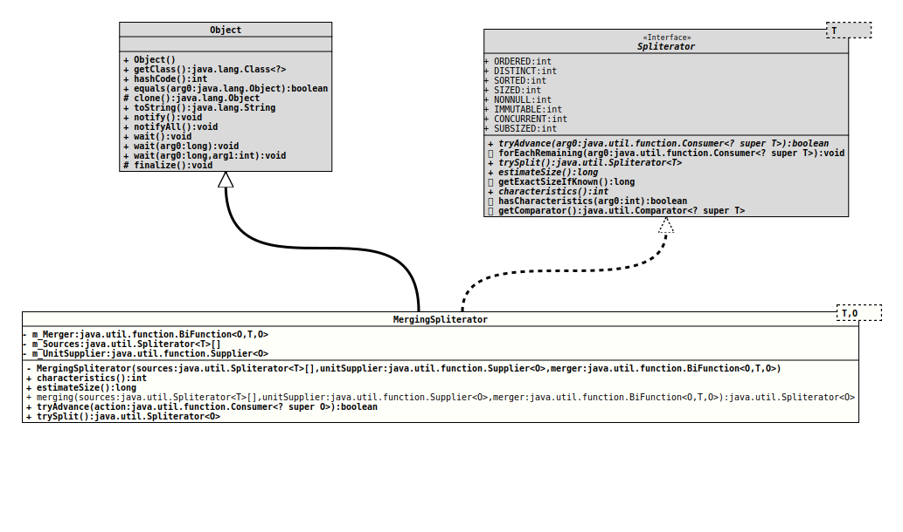

Module org.tquadrat.foundation.base
Class MergingSpliterator<T,O>
java.lang.Object
org.tquadrat.foundation.stream.internal.MergingSpliterator<T,O>
- Type Parameters:
T- The type over which the merged streams stream.O- The type of the accumulator, over which the constructed stream streams.
- All Implemented Interfaces:
Spliterator<O>
@ClassVersion(sourceVersion="$Id: MergingSpliterator.java 1060 2023-09-24 19:21:40Z tquadrat $")
@API(status=INTERNAL,
since="0.0.7")
public final class MergingSpliterator<T,O>
extends Object
implements Spliterator<O>
An implementation of
[@link Spliterator}
that merges streams.
- Author:
- Dominic Fox
- Modified by:
- Thomas Thrien (thomas.thrien@tquadrat.org)
- Version:
- $Id: MergingSpliterator.java 1060 2023-09-24 19:21:40Z tquadrat $
- Since:
- 0.0.7
- UML Diagram
-

UML Diagram for "org.tquadrat.foundation.stream.internal.MergingSpliterator"
{kind=link}
-
Nested Class Summary
Nested classes/interfaces inherited from interface java.util.Spliterator
Spliterator.OfDouble, Spliterator.OfInt, Spliterator.OfLong, Spliterator.OfPrimitive<T extends Object,T_CONS extends Object, T_SPLITR extends Spliterator.OfPrimitive<T, T_CONS, T_SPLITR>> -
Field Summary
FieldsModifier and TypeFieldDescriptionprivate final BiFunction<O,T, O> The merger function.private final Spliterator<T>[]The sources.The unit supplier.Fields inherited from interface java.util.Spliterator
CONCURRENT, DISTINCT, IMMUTABLE, NONNULL, ORDERED, SIZED, SORTED, SUBSIZED -
Constructor Summary
ConstructorsModifierConstructorDescriptionprivateMergingSpliterator(Spliterator<T>[] sources, Supplier<O> unitSupplier, BiFunction<O, T, O> merger) Creates a newMergingSpliteratorinstance. -
Method Summary
Modifier and TypeMethodDescriptionfinal intfinal longstatic final <T,O> Spliterator<O> merging(Spliterator<T>[] sources, Supplier<O> unitSupplier, BiFunction<O, T, O> merger) Factory method for instances ofMergingSpliterator.final booleantryAdvance(Consumer<? super O> action) final Spliterator<O>trySplit()Methods inherited from class java.lang.Object
clone, equals, finalize, getClass, hashCode, notify, notifyAll, toString, wait, wait, waitMethods inherited from interface java.util.Spliterator
forEachRemaining, getComparator, getExactSizeIfKnown, hasCharacteristics
-
Field Details
-
m_Merger
The merger function. -
m_Sources
The sources. -
m_UnitSupplier
The unit supplier.
-
-
Constructor Details
-
MergingSpliterator
private MergingSpliterator(Spliterator<T>[] sources, Supplier<O> unitSupplier, BiFunction<O, T, O> merger) Creates a newMergingSpliteratorinstance.- Parameters:
sources- The sources.unitSupplier- Supplies the initial "zero" or "unit" value for the accumulator.merger- Merges each item from the collection of values taken from the source streams into the accumulator value.
-
-
Method Details
-
characteristics
- Specified by:
characteristicsin interfaceSpliterator<T>
-
estimateSize
- Specified by:
estimateSizein interfaceSpliterator<T>
-
merging
public static final <T,O> Spliterator<O> merging(Spliterator<T>[] sources, Supplier<O> unitSupplier, BiFunction<O, T, O> merger) Factory method for instances ofMergingSpliterator.- Type Parameters:
O- The type of the elements in the resulting spliterator.T- The type of the elements in the source spliterators.- Parameters:
sources- The sources.unitSupplier- Supplies the initial "zero" or "unit" value for the accumulator.merger- Merges each item from the collection of values taken from the source streams into the accumulator value.- Returns:
- The new instance.
-
tryAdvance
- Specified by:
tryAdvancein interfaceSpliterator<T>
-
trySplit
- Specified by:
trySplitin interfaceSpliterator<T>
-